Vacation Site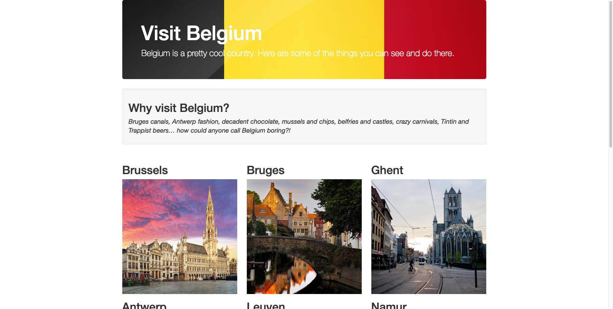
Vacation site was created during the bootstrap introduction phase of the class. My partner, Marc, and I used html, css, and bootstrap functions.
Animal Shelter Site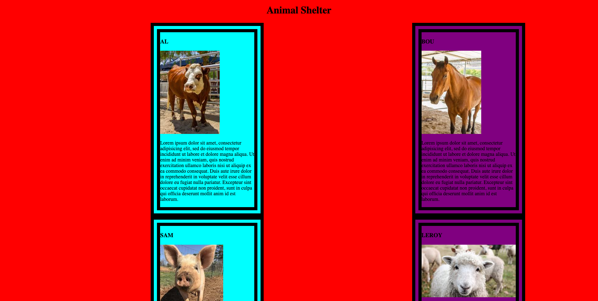Animal site was light expression of gathered knowledge during the second part of the CSS section of the intro phase of the class. My partner, Justin, and I used html and css commands.
Interior Design Site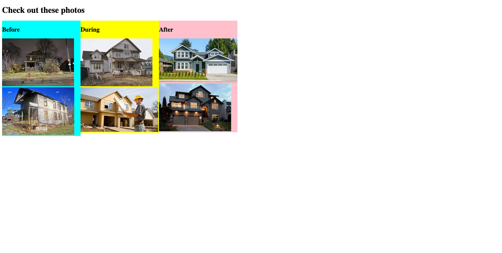Interior design site was developed to practice css. My partner, Justin, and I utilized html and css functions.
Refurbished Socks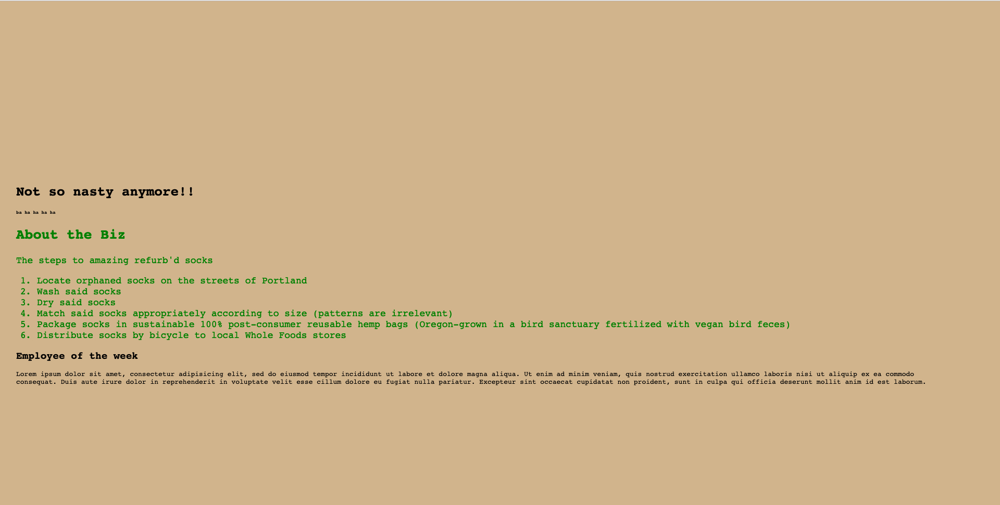Refurbished site was developed to practice css. My partners, Justin and Liz, and I utilized html and css functions.
Band Site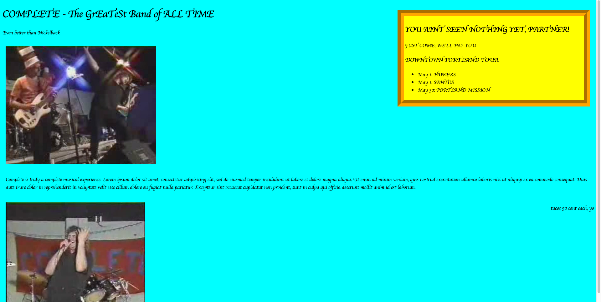Bando site was developed to practice css. My partners, Justin and Liz, and I utilized html and css functions.
Resume Site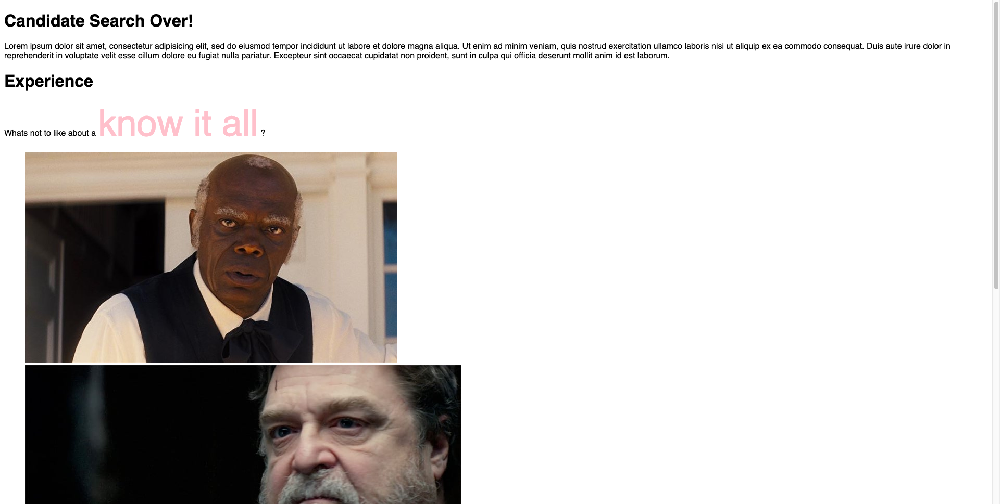Resume site was developed to practice css. My partners, Justin and Liz, and I utilized html and css functions.
Pets site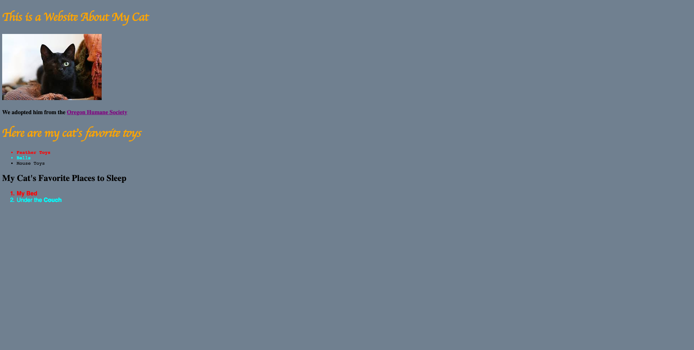Pets site was developed to practice html and later with css. My partner, Reese, and I initially developed a similar site with HTML while I adjusted some properties with other partners, Justin and Liz, in advanced HTML and CSS commands.
Cat Site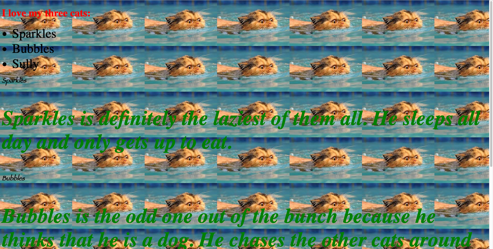Cat blog was developed to practice html. The site is similar to one I created with my partner, Reese. The example is a copy of one created by Justin. My partner, Justin, and I utilized html and css functions to adjust this site after its creation.
Boring Lecture Site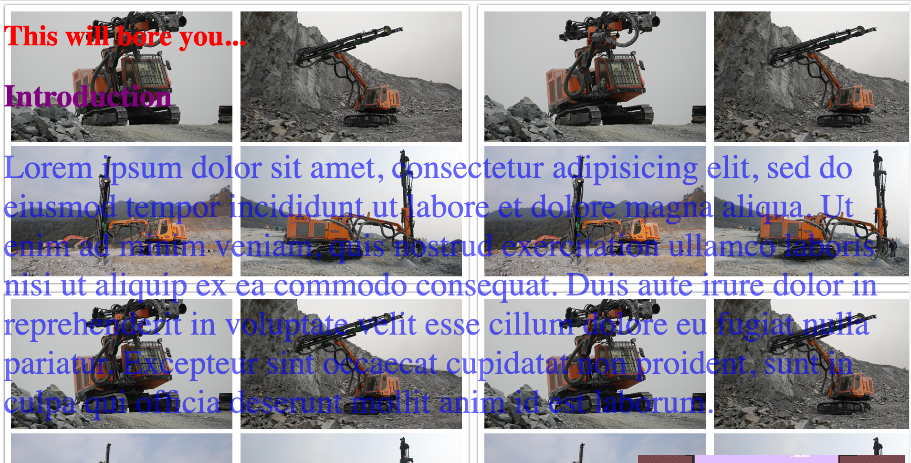Boring site was developed to practice css. My partner, Justin, and I utilized html and css functions to create this rushed example of perfection.
Cupcake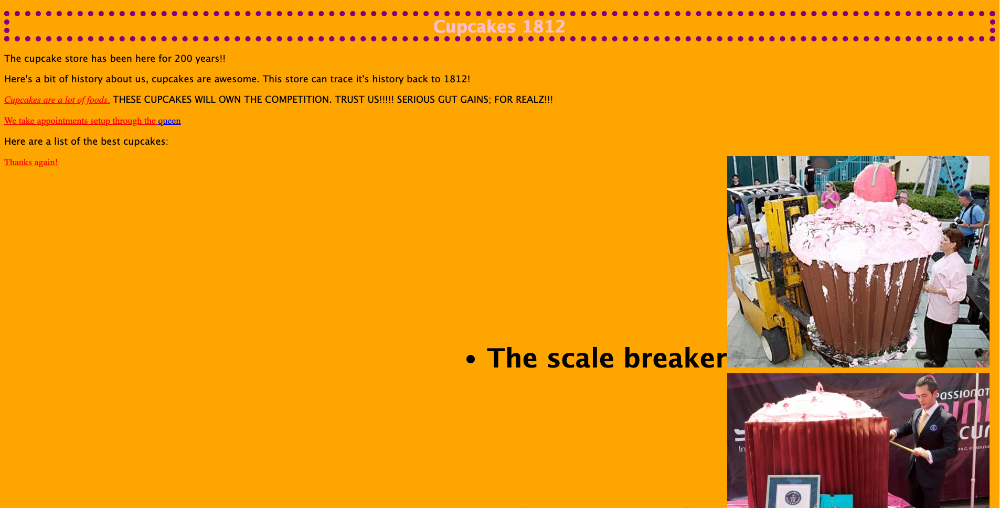Cupcake site was developed to practice css and html. My partner, Justin, and I created this masterpiece.
Resort Site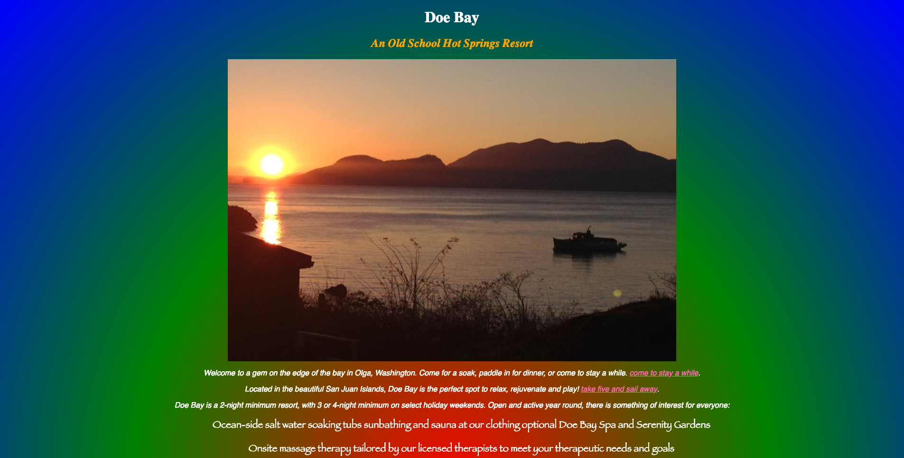Cupcake site was developed to practice html and some css. My partner, Marina, and I utilized enjoyed creating this masterpiece with a huge assistance to Marina's template design created before class.
Hello World Site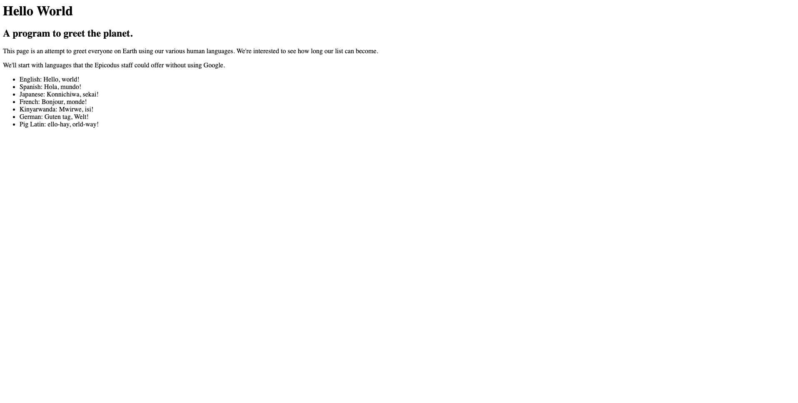Hello World was created by my partner, Reese, and I to practice the basics of HTML. My partner, Marina, and I modified this in another assignment for HTML.
Favorite Places Site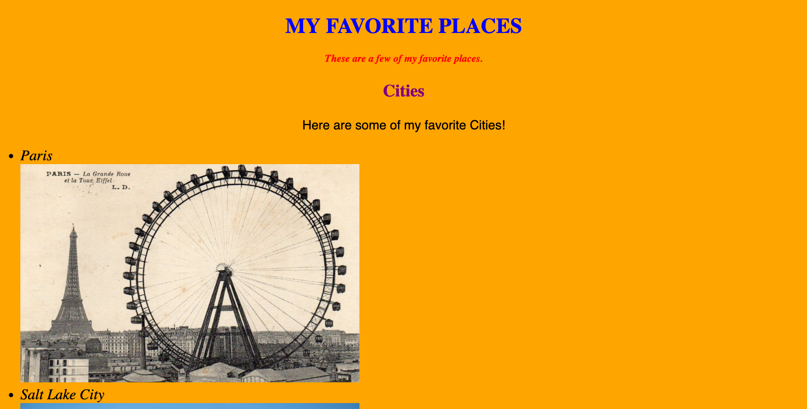Favorite places site was created by my partner, Reese, and I to practice html.
My First Webpage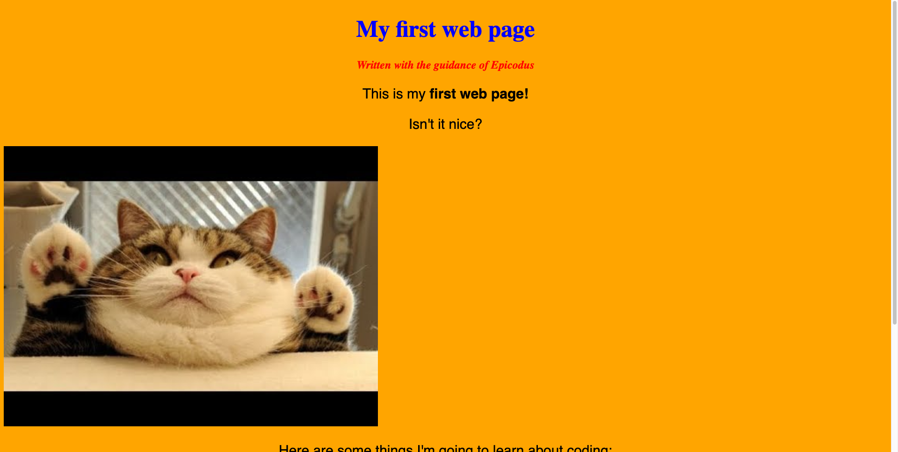My first webpage was a basic HTML site I created with my partner, Reese.
Kooki Resippii Site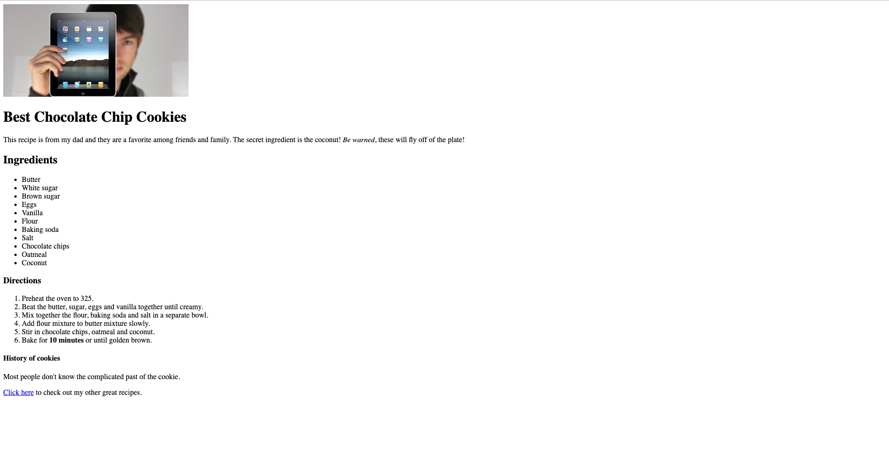Kooki Resippii was created with my partner, Reese, to pracice basic html
Good-bye Site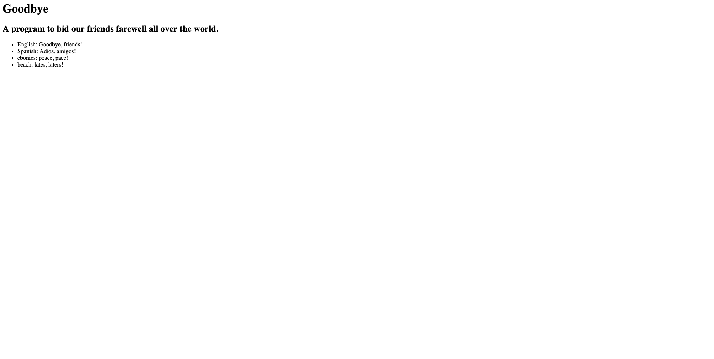Good-bye site was created by my partner, Reese, and I to practice html. This is where it all started.